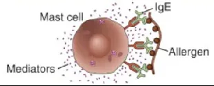
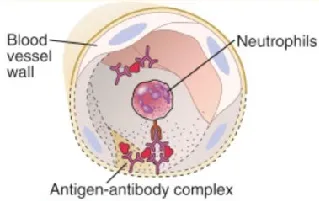
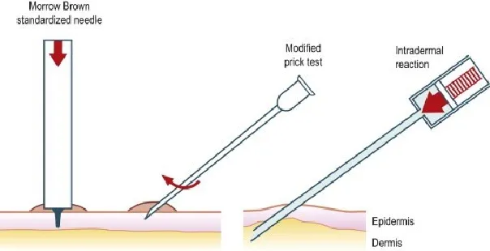

Week 15: Allergy, autoimmunity and vaccines
Every topic from Nicole's Notes and the Week 15 lectures. Pick a topic, open a card, then test yourself with the quick recall at the end.
Lectures this week
- Allergy
- Understanding allergy testing
- Approach to allergy through different lenses
- Autoimmunity
- Approach to autoimmune disease
- Vaccine adverse events
- Vaccine hesitancy
Hypersensitivity
Key definitions
- Hypersensitivity: an inappropriate, overreaction to benign antigens (usually proteins)
- Anaphylaxis: a serious allergic reaction with a rapid onset (minutes to within 1 hour), which may cause death
Hypersensitivity Reactions Nicole's Notes p. 144
- Hypersensitivity: an inappropriate, overreaction to benign antigens (usually proteins)
- Gell and Coombs hypersensitivity classification – can be used to explain the pathophysiology for most allergic reactions from immediate to delayed reactions
| Type of Allergic Reaction | Effector Mechanism | Examples |
|---|---|---|
| Type I: IgE mediated hypersensitivity (allergy and asthma) | Th2 cells, IgE antibody, mast cells, eosinophils Mast cell-derived mediators (vasoactive amines, lipid mediators, cytokines) Cytokine-mediated inflammation (eosinophils, neutrophils) | Allergic rhinitis, immediate food allergy, immediate drug allergy, venom allergy, asthma triggered by cat exposure |
| Type II: Antibody-mediated cell death | IgM, IgG antibodies against cell surface or extracellular matrix agents Complement and Fc receptor-mediated recruitment and activation of leukocytes (neutrophils, macrophages) Opsonization and phagocytosis of cells Abnormalities in cellular function – hormone or neurotransmitter receptor signalling | Drug-induced cytopenia |


| Type III: Immune complex disease | Immune complexes of circulating antigens and IgM or IgG antibodies deposited in vascular basement membrane Complement and Fc receptor-mediated recruitment and activation of leukocytes | Serum sickness like reaction Common in autoimmunity |
| Type IV: Delayed hypersensitivity (cell-mediated) | CD4+ T cells (cytokine-mediated inflammation) – macrophage activation CD8+ CTLs (T cell-mediated cytolysis) – direct target cell lysis | Stevens-Johnson syndrome (SJS), toxic epidermal necrolysis (TEN) Life-threatening allergic drug reactions |


Anaphylaxis Nicole's Notes p. 145
- Anaphylaxis: a serious allergic reaction with a rapid onset (minutes to within 1 hour), which may cause death
- 0.5-5% lifetime prevalence; 1% of ER visits for acute systemic allergic reactions receive the diagnosis of anaphylaxis
- Caused by the systemic release of mast cell and basophil mediators
- Anaphylaxis is highly likely when any one of the following three criteria is fulfilled: 1. Sudden onset of an illness (minutes to several hours), with involvement of the skin, mucosal tissue, or both (generalized hives, itch/flush, swollen lips-tongue-uvula), and at least one of the following: a. Sudden respiratory symptoms and signs (shortness of breath, wheeze, cough, stridor, hypoxemia) b. Sudden reduced BP or symptoms of end-organ dysfunction (hypotonia/collapse, incontinence) 2. Two or more of the following that occur suddenly after exposure to a likely allergen or other trigger for that patient: a. Sudden skin or mucosal symptoms and signs (generalized hives, itch/flush, swollen lips-tongue-uvula) b. Sudden respiratory symptoms and signs (shortness of breath, wheeze, cough, stridor, hypoxemia) c. Sudden reduced BP or symptoms of end-organ dysfunction (hypotonia/collapse, incontinence) d. Sudden gastrointestinal symptoms (crampy abdominal pain, vomiting) 3. Reduced BP after exposure to a known allergen for that patient: a. Infants and children: low systolic BP (age-specific) or greater than 30% decrease in systolic BP b. Adults: systolic BP of less than 90 mm Hg or greater than 30% decrease from that person’s baseline
- Treatment: remove the trigger, prompt administration of IM epinephrine (0.01 mg/kg of 1:1000 solution, max dose = 0.3 mg), repeat epinephrine every 5-15 mins PRN, other drugs after epinephrine (O, fluids, antihistamine, salbutamol, corticosteroids)
- Mean time to cardiorespiratory arrest: iatrogenic = 5 mins, insect sting = 15 mins, food = 30 mins
Hygiene Hypothesis (1989) Nicole's Notes p. 145
- Throughout the 20 th and into the 21 st century, the incidence of allergy has rapidly grown
- Suggests that the lower incidence of early childhood infections could explain the rise in allergy Immune system is being established in infancy and childhood
- Th1 inflammatory state is allergy protecting – defense against cellular organisms
- o Th2 inflammatory state is allergy promoting – induction of antibody production by B cells
- Living in a clean environment promotes the development of allergy; living in a dirty environment results in allergy protection
Quick recall
Answer in your head, then check.
I IgE mediated, II antibody-mediated cell death, III immune complex, IV delayed.
IM epinephrine 0.01 mg/kg of 1:1000, max 0.3 mg, repeated every 5 to 15 min as needed.
Th1 protects. Th2 promotes allergy.
Allergies and testing
Key definitions
- Pre-test probability: the clinical impression on the chance that the patient has a certain diagnosis
- Likelihood ratio (LR): the likelihood that a given test result would be expected in a patient with the target disorder compared to the likelihood that that same result would be expected in a patient without the target disorder
- Cross reactivity: can occur when there is ~70% homology between antigens such that the tertiary structure is conserved
- Component based IgE testing: pinpoints specific proteins that may be causing allergic symptoms
Common Allergies Nicole's Notes p. 146
| Allergic Rhinitis | Food Allergy | Drug Allergy | Venom Allergy | |
|---|---|---|---|---|
| Epidemiology | All ages, onset usually before 30 years Common; affects 30% of the population | All ages, presents most often in childhood 3-35% self-reported food allergy – adjust diet | 14-20% report hypersensitivity reactions -72% penicillin (33% immediate, 39% delayed) -90% are found not to be allergic | |
| Risk factors | Atopic dermatitis | Patient-related: young/middle aged, female, genetic polymorphisms, viral infection (HIV), previous reaction to the drug Drug-related: high molecular weight and hapten forming drug, topical > IV/IM > oral, frequent/prolonged dosing | Patients on beta blockers and ACE inhibitors, older adults, frequent stings, mast cell disorder | |
| Hx | Congestion, sneezing, rhinorrhea, pruritis, erythema of conjunctiva, watery eyes Chronic/intermittent, indoors/outdoors, time of year, triggers, response to allergy treatment, FHx, associated symptoms | Identify the potential offending food Timing of symptom onset Cutaneous (hives, itching, eczema), coughing, wheezing, dyspnea, chest tightness, loss of consciousness, low BP, vomiting, abdominal pain | All medications taken at the time of the reaction – start date, route, timing of symptom onset, symptoms, previous exposure to the suspected drug | Insect, what the patient was doing at the time, timing of symptom onset, when was the patient stung (recent, years ago), sequence of events after the sting (type of reaction, treatment) |
| DDx | Allergic rhinitis: pathognomonic itching, conjunctivitis Non-allergic / vasomotor rhinitis: congestion, rhinorrhea Nasal polyps: anosmia Infectious rhinitis: fever, sore throat | Allergy: immunological argument to explain the symptoms from a food Intolerance: known mechanism that can explain symptoms from a particular food Aversion: no mechanism to explain symptoms; not reproducible when blinded | Type A: predictable adverse drug reactions: -Overdose/toxicity, side effects, secondary/ indirect effects, drug interactions Type B: unpredictable adverse drug reactions -Intolerance, idiosyncrasy, immunologic drug reactions (allergy), pseudoallergenic | Normal local reaction: pain, itching, erythema, edema; lasts a few hours Large local reaction: swelling > 10 cm; 1-2 days Systemic cutaneous (children): flushing, itching, urticaria; not contiguous Systemic extracutaneous: involves multiple organ systems (bronchospasm, upper airway edema, hypotension, GI, cardia arrythmia) |
| Allergens/ Types | Intermittent (< 6 weeks): pollen, mold Persistent (chronic): dust mites, pets Mild: normal sleep, no functional impairment Severe: abnormal sleep, functional impairment | Peanuts, tree nuts, milk, eggs, wheat, soy, fish Immediate (within 1 hour) Non-immediate (hours): vomiting, diarrhea; food protein-induced allergic proctocolitis (FPIAP) | Immediate vs. delayed Mild vs. severe Gell and Coombs classification | Insect venom is a complex mixture of proteins, vasoactive amines, and enzymes Apidae: honeybee (barbed), bumblebee Vespidae: yellowjacket, hornets Polistinae: paper wasp Formicidae: fire ant, jumper ant, harvester ant |
| Ix | Skin prick testing Serum specific IgE testing (RAST) | Skin prick testing Serum specific IgE testing (RAST) Oral challenge to the suspected food | Skin prick testing (most reliable, > 95% NPV) Oral challenge to the drug | Skin prick testing |
| Tx | Allergen avoidance 2 nd generation antihistamines daily or PRN: Claritin, Reactine (cetirizine), Aerius Avoid 1 st generation antihistamines: Benadryl Nasal steroids daily: mometasone Eye drops: patanol Immunotherapy: subcutaneous, sublingual Avoid decongestant nose sprays – dependence | Allergen avoidance: may contain claims are issues Epinephrine (standard of care): -EpiPen – blue to the sky, orange to the thigh Oral immunotherapy: -Small incremental doses over time, so the patient will not react to an accidental exposure -Extensively baking milk and egg | Avoid if Type I and Type IV reactions | For extracutaneous systemic reactions ONLY: EpiPen (can Rx if a patient wants one) Venom immunotherapy (allergy shots): -Effective to reduce death from a sting -Decrease risk of a systemic reaction to < 5% |
| Prognosis | Children will likely outgrow milk and egg allergies, but are unlikely to outgrow anything else | Immediate reactions can wane over time (80% of patients will not be allergic after 10 years of avoidance) Delayed reactions persist throughout life | Many patients will lose their sensitivity over time (after 7 years, 70% of patients who were initially positive did not react to a sting) | |
| Prevention | Dust mites: wash sheets weekly in hot water Pollens/mold: use A/C, keep windows closed Pets: removal from home, bath regularly | Dual antigen hypothesis -High-dose oral exposure: introduce allergenic foods early (4-6 months) – LEAP study, EAT study -Low-dose cutaneous exposure: do not rub food over the skin – coconut oil on atopic dermatitis | Avoid cross-reactive drugs Use predicative skin tests if available for immediate drug allergy Prudent use of drugs Preferential use of oral drugs | Sting avoidance: eating outdoors, flowering plants, drinking from straws/cans/bottles, remove fallen fruit or pet feces, cover trash cans, watch for nests in bushes/ground when mowing, going barefoot outdoors |
Allergy Testing Nicole's Notes p. 147
- Allergy testing plays a role in the diagnosis of Type I hypersensitivity reactions
- The best allergy testing tool is the clinical Hx
- Allergy testing sensitivity and specificity are different depending on what is being tested for and the type of testing done
- Interpreting a test depends on the pre-/post-test probabilities and likelihood ratios, in the context of the clinical Hx
- Pre-test probability: the clinical impression on the chance that the patient has a certain diagnosis
- o Clinical experience, epidemiology, co-morbid conditions, risk factors, PEx findings
- Likelihood ratio (LR): the likelihood that a given test result would be expected in a patient with the target disorder compared to the likelihood that that same result would be expected in a patient without the target disorder
- o Positive LR: the odds that a person who has what you are looking for has a positive test compared to a person who does not have what you are looking for but has a positive test; Sn/(1-Sp)
- o Negative LR: the odds that a person who has what you are looking for has a negative test compared to a person who does not have what you are looking for but has a negative test; (1-Sn)/Sp
- o Calculate from sensitivity and specificity or use a nomogram
- Cross reactivity: can occur when there is ~70% homology between antigens such that the tertiary structure is conserved
- o Patients with food pollen syndrome to birch can get oral pruritis to almond
- Food allergen proteins used for skin prick testing and serum IgE testing are commercially prepared Purified food protein – should contain all relevant allergens; amount of each allergen is variable with each batch
- o Recombinant extract – known allergens are made using bacteria vectors; often contains the major known allergens, but will not contain allergens that are not well known (false negative results); can be used to spike purified food protein extracts for clinically important allergens that are at low concentration
- Environmental allergen proteins: dust mites (feces), cat/dog (dander), seasonal allergens (pollen), mold (spores)
| Skin Prick Test | Intradermal Test | |
|---|---|---|
| Use | Foods, environmental allergens, immediate drug allergy (penicillin) | Drugs, venom (patients who have had anaphylaxis) |
| Sensitivity | 57-97% | 60-95% |
| Specificity | 70-94% | 32-89% |
| Method | Several allergens are introduced to the skin Positive control: histamine Negative control: saline solution | Inject antigen just below the epidermis and produce a bleb |
| Positive test | Wheal ≥ 3 mm of the negative control | Wheal ≥ 3 mm of the negative control |
| Common errors | Tests are placed too close together (< 2 cm) – overlapping reactions Induction of bleeding – false positive results Insufficient penetration of skin – false negative results Allergen solutions can spread during the test or when the solution is wiped away Food testing is more likely to have false negative results with commercial extracts opposed to fresh foods | Test sites are too close together – false positive results Volume injected is too large (> 0.1 mL) High concentration of allergen – false positive results Splash reaction is caused by air injection Subcutaneous injection – false negative results Intracutaneous bleeding site – false positive results Too many tests performed at the same time – systemic reactions |


- Radioallergosorbent (RAST) testing: a blood test using radioimmunoassay test to detect specific IgE antibodies in order to determine the substances a subject is allergic to 1. Extract proteins from the allergen 2. Affix the protein extract to a solid phase surface and send to the lab 3. Isolate the patient’s serum and add it to the protein; wash away the serum, leaving behind the bound IgE 4. Add a marker to measure the IgE bound; measure how much IgE is bound
- Component based IgE testing: pinpoints specific proteins that may be causing allergic symptoms
- o Newer test to better predict reactions to foods and potential cross-reactivity to foods, and to identify major allergens for food and aeroallergens
- Oral challenges (gold standard)
- o Foods: 5-7 step approach, increase dose every 15-30 mins, with the goal of consuming a total age-appropriate serving § Dry foods = 8-10 g, wet foods = 100 mL
- o Drugs: single step (give full dose and observe); two step/graded (give 10% dose, wait, give remaining 90% dose) High risk patients: start with very low doses where the patient is unlikely to react, optimize comorbid conditions, avoid
- in pregnant patients, beta blockers can interfere with allergic reaction treatments, do the challenge in hospital and consider an IV prior to the challenge
Approach to Allergy from Different Healthcare Providers Nicole's Notes p. 148
| Health Care Provider | Role |
|---|---|
| Pharmacist | Often the first point of contact for patients with possible mild allergic reactions – severe reactions present to the ER Advise the patient about selecting an antihistamine Recommend follow-up, allergen avoidance, and seeing the family physician Do NOT provide a diagnosis – treatments and advice |
| Family physician | Provide a presumptive diagnosis, recommendations, and a treatment plan Consider many different factors to help make the diagnosis Make a referral to an allergist |
| Allergist | Consider the same factors as the family doctor to help make a diagnosis Confirm the allergy and counsel/educate the patient about it Develop a treatment and management plan |
Quick recall
Answer in your head, then check.
Type A is predictable (toxicity, side effects, interactions). Type B is unpredictable (intolerance, idiosyncrasy, allergy).
Specific IgE antibodies in the blood.
Autoimmunity
Key definitions
- Immune tolerance: antigen-specific immunological unresponsiveness to self-antigens
- Autoimmunity: failure of the immune system to recognize self-cells, and the resultant destruction of these self-cells
Autoimmune Disease Nicole's Notes p. 148
- Immune tolerance: antigen-specific immunological unresponsiveness to self-antigens
- o Central tolerance: immature self-reactive lymphocytes are negatively selected/deleted in the BM and thymus gland
- o Lymphocytes that have low affinity receptors for self-antigen will enter the periphery
- o Peripheral tolerance: mature self-reactive lymphocytes are addressed by the spleen and lymph nodes through immunologic ignorance (anatomical barrier), anergy/inhibition (blocks CD28:CD80), deletion (Fas ligand), and suppression (regulatory T cells – IL-10, TGF- β)
- Autoimmunity: failure of the immune system to recognize self-cells, and the resultant destruction of these self-cells
| Breakdown of Tolerance | Examples | |
|---|---|---|
| Defective deletion of self- reactive T cells | Lack of expression, mutations in Fas, Fas ligand, or its signalling pathway | Multiple sclerosis, rheumatoid arthritis, lupus |
| Infections | Polyclonal lymphocyte activation – superantigens produced by bacteria/viruses cause non-specific T cell activation by linking the TCR to the MHC II Molecular mimicry – self-antigens that look like foreign antigens Release of intracellular self-antigens following viral infections | Rheumatoid arthritis: bacterial antigen Porphyromonas gingivalis looks like self-antigen α Enolase |
| Release of sequestered self- antigens following tissue injury | Ignorant CD4 T cells could become activated and lead to autoimmune responses The autoimmunity following tissue injury is often transient | Uveitis (eye inflammation) |
| Modification of self-antigen | Drugs or microbes make post-translational modifications – nitration, phosphorylation, glycosylation, citrullination | Citrullination of α Enolase in rheumatoid arthritis |
| Defective immune responses | Signalling activation (CD28:CD80/B7) >>> signalling inhibition (CTL4:CD80/B7) Insufficient suppression by regulatory T cells – fewer or malfunctioning Imbalance in cytokine production – more Th1 than Th2 responses | Multiple sclerosis, rheumatoid arthritis, type 1 diabetes, inflammatory bowel disease |
- Autoimmunity can be seen in any organ system – 100 different diseases are attributed to an autoimmune etiology
- 1/30 are afflicted with an autoimmune disease; females are more likely than makes to have autoimmunity
- Most are chronic inflammatory processes of unknown cause – genetic factors (polygenic; MHC II encoded by HLA molecules are most strongly associated with autoimmune diseases); environmental factors (pollen, toxic exposures)
- The best way to approach autoimmunity is to have it on the DDx
| System | Organ specific | Multiple sclerosis (CNS), Grave’s disease (thyroid), Myasthenia Gravis (neuromuscular), type 1 diabetes (pancreas) |
| Systemic | Systemic lupus erythematosus, rheumatoid arthritis | |
| Mechanism of tissue damage | Antibody-mediated | Autoimmune hemolytic anemia (RBCs), Grave’s disease (thyroid stimulating hormone receptor), Myasthenia Gravis (acetylcholine receptor), SLE (double-stranded DNA) |
| T cell-mediated | Multiple sclerosis (myelin), Type 1 diabetes (insulin producing β cells in the pancreas) | |
| Mixed antibody and T cell-mediated | Rheumatoid arthritis (cause unknown; affects 1% of the population, 3 × more frequent in women) -Risk factors: DRB1SE gene, toxic exposures (smoking), infection (periodontal disease), defective immune system regulation -Associated with a specific type of HLA-DRB1 that encodes MHC II-SE (shared epitope) -MHC-SE is associated with anti-citrullinated protein antibodies (ACPA), autoantibodies directed at citrullinated proteins -MHC-SE binds strongly to self-proteins that have been modified by citrullination à à à -T cell and B cell activation pro-inflammatory cytokines APCA production by B cells tissue destruction |
- There needs to be a clinical suspicion that the patient has an autoimmune condition based on the Hx and PEx findings
- Ix: blood antibodies, biopsy, pathology stain for inflammatory markers, imaging, genetics
- Tx: replace what is missing (levothyroxine, insulin) or medications that suppress immune system/response (rituximab)
Quick recall
Answer in your head, then check.
Antigen-specific unresponsiveness to self-antigens.
In the bone marrow and thymus, where immature self-reactive lymphocytes are deleted.
Vaccines
Key definitions
- Vaccine platform: any underlying technology that can be used to develop multiple vaccines
- Vaccine candidate: usually an antigen that is highly immunogenic for the pathogen
- Vaccine hesitancy: refers to delay in acceptance or refusal of vaccines despite availability of vaccine services
Vaccine Development and Approval in Canada Nicole's Notes p. 136
| Stage | Process (conventional vaccine development takes 8-15 years) |
|---|---|
| Exploratory | Scientists develop a potential vaccine |
| Preclinical | Scientists conduct lab and animal studies before testing on humans |
| Clinical trials | Phase I = 10s of volunteers; Is the vaccine safe? What is a safe dose? Are there any side effects? |
| Phase II = 100s of volunteers; How well does the vaccine work? Is it safe on a large number of people? Safest and most effective dose? | |
| Phase III = 10000s of volunteers; Does the vaccine prevent disease? What are the side effects? | |
| Application | Manufacturer submits application to Health Canada for review |
| Scientific review | Teams of Health Canada experts conduct a thorough and independent review of all vaccine data |
| Approval | Health Canada approves a vaccine if it is safe, it works, it meets manufacturing standards, and the benefits outweigh the risks |
| Distribution | Governments coordinate the purchase, logistics, and distribution of vaccines across Canada |
| Vaccination | All Canadians have access to the vaccine |
| Monitoring | Continuous monitoring and review to confirm the safety of the vaccine, and that benefits outweigh the risks |
COVID-19 Vaccines Nicole's Notes p. 136
- Vaccine platform: any underlying technology that can be used to develop multiple vaccines
- Vaccine candidate: usually an antigen that is highly immunogenic for the pathogen
| Vaccine | Method | Examples | Efficacy | ||
|---|---|---|---|---|---|
| Platform | |||||
| New and novel | Viral vector | Viral vectors like human or chimpanzee adenovirus carry SARS-CoV-2 DNA into host cells | Astra Zeneca/Vaxzevria (ChAd) Astra Zeneca Sputnik | D2: 62-82%, 59% (delta) D2 in 12 weeks: 82% | |
| Johnson & Johnson (Ad26) | D1: 67% | ||||
| DNA | Genetic vaccines deliver the pathogen’s genes (DNA/ messenger RNA for making spike) into host cells | Pfizer/BioNTech/Cominarty (mRNA) | D2: > 94%, 87% (delta) 12-16 years D2: 100% | ||
| Moderna/ Spikevax (mRNA) | D2: > 94%, 87% (delta) | ||||
| Inovio (DNA) | |||||
| RNA | The pathogen’s DNA/protein is attached to a nanoparticle (in the form of a virus-like particle) | Novavax (SAR-CoV-2 spike protein) | |||
| Traditional | Protein | A pathogen’s whole protein/protein fragments are used to make the vaccine (SARS-CoV-2 spike protein) | Flinders University/Vaxine | ||
| Killed or attenuated virus | Killed/inactivated virus vaccines are being developed by Chinese and Indian companies Live attenuated COVID-19 vaccines are unlikely to progress due to difficulties in production and attenuating the virus | Sinopharm Sinovac |
- 636 reported myocarditis cases from 133 million vaccines – males < 25, within 2 weeks after D2, most resolve spontaneously
- COVID-19 vaccine trials in younger children (5-11 years) – 1/3 adult dose
- o Good antibody responses with 90.7% efficacy; similar side effect profile but less likely, no myocarditis
- No obvious safety signals with respect to pregnancy or neonatal outcomes associated with COVID-19 vaccination in the 3 rd trimester; mRNA has not been found in breast milk – breastfeeding should continue, baby could benefit from passive transfer
- Side effects: injection site pain, fatigue, headache, myalgia, fever, nausea, chills
| Adenoviral Vector | mRNA | |
|---|---|---|
| Mechanism | Introduce genetic material that encodes COVID-19 genes to allow human cells to make the virus proteins | |
| Delivery | Harmless adenovirus | Lipid nanoparticles |
| Components | Adenovirus vector, ethanol, EDTA, sucrose, histidine | mRNA, polyethylene glycol (PEG), lipids, salts, sucrose |
| Storage | Stable for months at regular refrigerator temperature | Special storage requirement; low temperatures critical |
| Dosing | AZ: 2 doses, 4-12 weeks apart J&J: 1 dose | Pfizer: 2 doses, 3 days apart Moderna: 2 doses, 4 weeks apart |
| Immunosuppressed individuals require 3 doses to complete a primary series | ||
| Rare adverse effects | Allergy Clots / TTS (< 10/10 6), capillary leak syndrome Guillain-Barre syndrome | Allergy Myocarditis/pericarditis (< 10-70/10 6) Bell’s palsy |
| Advantages | Previously established technology Can trigger a strong immune response involving T-cells and B-cells | Good safety and reliability Simple to manufacture – can match variant genetic codes |
| Disadvantages/ Challenges | Prior vector exposure decreases effectiveness, relatively complex to manufacture | Unintended immune reaction, challenge ensuring effective delivery, storage issues, not previously licensed in humans |
| Gaps | No correlate of immunity – do not know how well someone is protected (level of antibody) and when to give another booster |
Vaccine Adverse Events and Reporting Nicole's Notes p. 137
- Adverse event following immunization (AEFI): an unwanted or unexpected health effect that happens within 6 weeks of immunization, which may or may not be caused by the vaccine Vaccine component allergy – anaphylaxis post-Pfizer in a patient with PEG hypersensitivity
- Defective component – paralysis post-oral polio V (inadequate inactivation)
- o Vaccine process (error or anxiety) – contaminated vial with injection abscess, syncope, hyperventilation
- o Reaction independent of vaccine – fracture radius, UTI
| Classification of AEFI by Severity | Frequency |
|---|---|
| Very common | 10% |
| Common adverse effects | 1-10% |
| Uncommon | 0.1-1% |
| Rare | 1/10000 to < 10/10000 |
| Very rare | < 1/10000 |
| Ingredient | Purpose |
|---|---|
| Active ingredient | A very small amount of a harmless form of the bacteria or virus you are immunising against |
| Adjuvants | Create a stronger immune response to the vaccine; pose no significant risk to health in the very small quantities used |
| Residual traces | Substances that have been used during vaccine manufacture, measured as ppm/ppb in the final vaccine |
| Preservatives and stabilizers | Maintain vaccine quality, safe storage, and prevent contamination |
| Water | Main ingredient |
| Vaccine Type | Vaccine | Events | Frequency |
|---|---|---|---|
| Live | Rotavirus | Intussusception | 1-2/10 5 |
| MMR | Febrile seizures | 3-9/10 4 | |
| Thrombocytopenia | 5 2-3/10 | ||
| Anaphylaxis | 3-10/10 6 | ||
| Inactivated | Whole-cell pertussis | Prolonged crying or seizures | < 1/10 2 |
| Hypotonic hyporesponsive episode (HHE) | < 1-2/10 3 | ||
| Inactivated polio | None | ||
| Toxoid | Diphtheria | Hyperpyrexia | 3/10 3 |
| Febrile seizures | 8/10 4 | ||
| HHE | 0-29/10 6 | ||
| Tetanus | Anaphylaxis | 1/10 6 | |
| Brachial neuritis | 0.7/10 7 | ||
| Subunit | Hepatitis B | Anaphylaxis | 1/10 6 |
| Acellular pertussis | Swollen limb in which vaccine administered | 2-6/100 | |
| Prolonged crying/seizures/HHE | Rare | ||
| Pneumococcal/Haemophilus influenzae B | None | ||
| Meningococcal (ACYW) | None | ||
| HPV | None |
| AEFI | Healthcare providers and lay public fill out the “Report of Adverse Event Following Immunization (AEFI)” form and send to the local Public Health Unit Reporting of AEFIs for all immunizing agents available in Canada is MANDATED for healthcare providers who administer immunizations under Section 38 of the Health Protection and Promotion Act and Regulation 569 | |
| Local | Local medical officer/public health nurse reviews and makes recommendations for future vaccines | Immunization Monitoring Program ACTive (IMPACT) detects AEFIs at children’s hospitals |
| Provincial | All local Public Health Unit reports from the province go to the provincial Public Health hub and are reviewed | |
| National | All provinces submit reports to the Canadian AEFI Surveillance System (PHAC) for analysis and tracking | |
| Global | WHO International Drug Monitoring program collects reports from 75 countries, including Canada | |
| Vaccine manufacturers report all serious Aes to Health Canada |
- Vaccine Injury Support Program (VISP): to ensure that all people in Canada who have experienced a serious and permanent injury as a result of receiving a Health Canada authorized vaccine, administered in Canada on or after December 8, 2020, have fair and timely access to financial support
Vaccine Hesitancy Nicole's Notes p. 138
- Vaccine hesitancy: refers to delay in acceptance or refusal of vaccines despite availability of vaccine services
- Most vaccine-hesitant parents under-immunize their children; 3% of parents are vaccine refusers
1. Pre-visit prep: collection and review of background information – immunization Hx, comorbidities, immunosuppression,
willingness to attend, identified barriers, outright trust issues, language barriers
2. Organize and obtain required supports – cultural competence, interpreter, handouts, statistics (rates, severity, safety, efficacy)
| COVID-19 Vaccine Hesitancy Factor | Reasoning |
|---|---|
| Distrust | Personal/negative experience, mixed messages from various healthcare team members, historical context (Tuskegee) |
| Fear of vaccine harm | Vaccine produced too rapidly, trials did not include persons like them, myths on social media, limited data, needle phobia |
| Feel they have no disease risk | Lifestyle/age/health status is protective, belief that there is no/limited personal risk |
| Feal COVID-19 is a hoax/not real | Just the flu, manipulated stats |
- Understand the key role that sound vaccine advice from a health care provider can play in parental decision-making, and do not dismiss vaccine refusers from your practice
- Set aside extra time to counsel vaccine-hesitant parents
- Use presumptive and motivational interviewing techniques to understand a parent’s specific vaccine concerns
- Use simple, clear language to present evidence of disease risks and vaccine benefits/risks, fairly and accurately
- Address pain head on
- Community protection (herd immunity) does not guarantee personal protection
Quick recall
Answer in your head, then check.
Within 6 weeks of immunization.
Delay in accepting, or refusing, vaccines despite available services.
The Vaccine Injury Support Program (VISP).